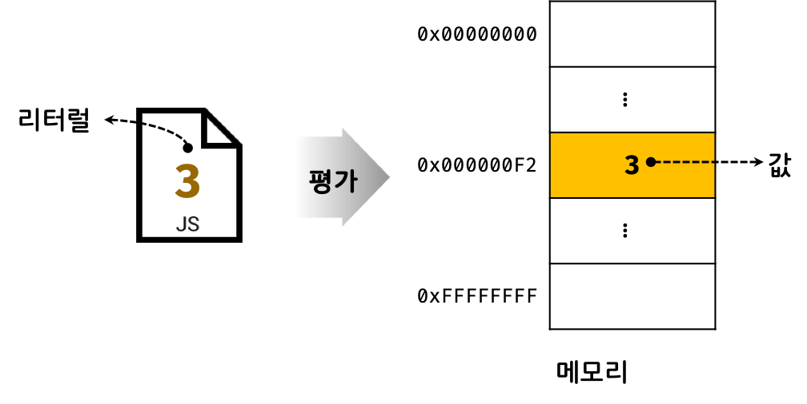

Table of Contents
- 1. 1) 값(value)
- 2. 2) 리터럴(literal)
- 3. 3) 표현식(expression)
- 4. 4) 문(statement)
- 5. 5) 세미콜론과 세미콜론 자동 삽입 기능(ASI, automatic semicolon insertion)
- 6. 6) 표현식인 문과 표현식이 아닌 문
1) 값(value)
💡 값 : 식(표현식)이 평가되어 생성된 결과
- 실제 메모리에 저장되는 최소단위
- 변수에 할당되는 것은 값이다. (변수 할당문의 우측에 위치)
Q) 변수는 메모리 공간이다 -> (O)
Q) 리터럴은 값이다 -> (O)
Q) 표현식은 값이다 -> (O)
2) 리터럴(literal)
💡 리터럴 : 사람이 이해할 수 있는 문자 또는 약속된 기호를 사용해 값을 생성하는 표기 방식
- 사람이 이해할 수 있는 문자(아라비아 숫자, 알파벳, 한글 등) 또는 미리 약속된 기호(‘’, “”, ., [], {}, // 등)로 표기한 코드
- 값을 생성하기 위해 미리 약속한 표기법이다.
- 아래 그림처럼 사람이 이해할 수 있는 아라비아 숫자를 사용해 숫자 리터럴 3을 코드에 기술하면 자바스크립트 엔진은 이를 평가해 숫자 값 3을 생성한다.
값과 리터럴
1
2
3
4
5
6
7
8
9
10
11
12
13
14
15
16
17
18
19
20
21
22
23
24
25
26
27
28
29
30
31
32
33
34
35
36
|
100
10.5
0b01000001
0o101
0x41
'Hello'
"World"
true
false
null
undefined
{ name: 'Lee', address: 'Seoul' }
[ 1, 2, 3 ]
function() {}
/[A-Z]+/g
|
3) 표현식(expression)
💡 표현식 : 값으로 평가될 수 있는 문(statement)
- 표현식은 리터럴, 식별자(변수, 함수 등의 이름), 연산자, 함수 호출 등의 조합이다.
- 표현식이 평가되면 새로운 값을 생성하거나 기존 값을 참조한다.
4) 문(statement)
💡 문 : 프로그램을 구성하는 기본 단위이자 최소 실행 단위
- 문은 여러 토큰으로 구성된다.
토큰(token)이란 문법적으로 더 이상 나눌 수 없는 코드의 기본 요소를 의미한다.
- 문을 명령문이라고도 부른다. 즉, 문은 컴퓨터에 내리는 명령이다. 문이 실행되면 명령이 실행되고 무슨 일인가가 일어나게 된다.
- 선언문, 할당문, 조건문, 반복문 등으로 구분할 수 있다.
- 세미콜론(;)은 문의 종료를 나타낸다.(생략가능하다.)
1
2
3
4
5
6
7
8
9
10
11
12
13
14
|
var x;
x = 5;
function foo () {}
if (x > 1) { console.log(x); }
for (var i = 0; i < 2; i++) { console.log(i); }
|
5) 세미콜론과 세미콜론 자동 삽입 기능(ASI, automatic semicolon insertion)
- 세미콜론(;)은 문의 종료를 나타낸다.
- 단, 0개 이상의 문을 중괄호로 묶은 코드 블록 ({ … }) 뒤에는 세미콜론을 붙이지 않는다. (ex. if문, for문, 함수 등)
- 세미콜론 자동 삽입 기능(ASI, automatic semicolon insertion) 덕분에 세미콜론은 생략가능하다.
하지만 개발자의 예측과 다르게 동작할 수 있기 때문에 가급적 세미콜론을 생략하지 않는 것이 더 바람직하다.
1
2
3
4
5
6
7
8
| function foo () {
return
{}
}
console.log(foo());
|
6) 표현식인 문과 표현식이 아닌 문
- 표현식인 문과 표현식이 아닌 문을 구별하는 가장 간단하고 명료한 방법은 변수에 할당해 보는 것!
표현식인 문 : 값으로 평가됨 → 변수에 할당 가능
표현식이 아닌 문 : 값으로 평가할 수 X → 변수에 할당 X
1
2
3
4
|
var x;
var foo = var x;
|
위에서 변수 선언문은 표현식이 아니므로 값으로 평가할 수 없다.
1
2
3
4
5
|
x = 100;
var foo = x = 100;
console.log(foo);
|
할당문은 표현식인 문이므로 값으로 평가할 수 있다. 따라서 변수 foo에 할당 가능하고 100이 할당되었음을 알 수 있다.
- 📒 완료값
: 크롬 개발자 도구에서 표현식이 아닌 문을 실행하면 언제나 undefined를 출력하는데 이를 완료값이라 한다.
다른 값과 같이 변수에 할당할 수 없고 참조할 수도 없다.
1
2
3
| var foo = 10;
if true(){}
|
Reference